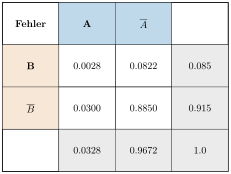
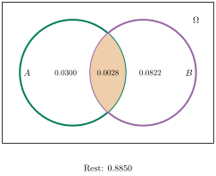

Aufgabe 5.5
Fluggepäck wird mit einem Strichcode auf Papieraufklebern gekennzeichnet, mit dessen Hilfe der Zielflughafen ermittelt wird. Diese Ermittlung schlägt in 11.5% der Fälle fehl, da mindestens einer der voneinander unabhängigen Fehler $A$: «Papier ist zerknittert» oder $B$: «Papier ist verschmutzt» auftritt.
- Bestimmen Sie $P(A)$, wenn bekannt ist, dass $P(B) = 8.5\%$ ist.
- Mit welcher Wahrscheinlichkeit tritt nur einer der Fehler $A$ und $B$ auf?
- Nutzen Sie die Additionsformel $P(A \cup B) = P(A) + P(B) - P(A \cap B)$
- Bei unabhängigen Ereignissen gilt $P(A \cap B) = P(A) \cdot P(B)$
- «Nur einer» bedeutet $(A \cap \overline{B}) \cup (\overline{A} \cap B)$
- Die Unabhängigkeit überträgt sich auf Komplemente
Gegeben:
- $P(A \cup B) = 0.115$ (Gesamtfehlerrate)
- $P(B) = 0.085$ (Verschmutzung)
- $A$ und $B$ sind unabhängig
Teil (a): Bestimmung von $P(A)$
Lösungsweg 1: Mit Additionsformel
Aus der Additionsformel und der Unabhängigkeit: \begin{align*} P(A \cup B) &= P(A) + P(B) - P(A \cap B)\\ &= P(A) + P(B) - P(A) \cdot P(B) \quad \text{(Unabhängigkeit)}\\ 0.115 &= P(A) + 0.085 - P(A) \cdot 0.085\\ 0.115 &= P(A)(1 - 0.085) + 0.085\\ 0.03 &= P(A) \cdot 0.915\\ P(A) &= \frac{0.03}{0.915} \approx 0.0328 \end{align*}
$$\boxed{P(A) \approx 3.28\% \approx 3.3\%}$$
Lösungsweg 2: Mit Vierfeldertafel
Mit $P(A) = 0.0328$ und Unabhängigkeit:

Verifikation: $P(A \cup B) = 0.0028 + 0.0300 + 0.0822 = 0.115$ ✓
Teil (b): Wahrscheinlichkeit für genau einen Fehler
Visualisierung mit Venn-Diagramm:

s Gesucht: $P\big((A \cap \overline{B}) \cup (\overline{A} \cap B)\big)$
Da die Ereignisse disjunkt sind: \begin{align*} P(\text{genau ein Fehler}) &= P(A \cap \overline{B}) + P(\overline{A} \cap B)\\ &= P(A) \cdot P(\overline{B}) + P(\overline{A}) \cdot P(B) \quad \text{(Unabhängigkeit)}\\ &= 0.0328 \cdot 0.915 + 0.9672 \cdot 0.085\\ &= 0.0300 + 0.0822\\ &= 0.1122 \end{align*}
$$\boxed{P(\text{genau ein Fehler}) \approx 11.22\% \approx 11.2\%}$$
Interpretation:
Von den 11.5% fehlerhaften Ermittlungen sind:
- 11.2% auf genau einen Fehler zurückzuführen
- Nur 0.3% auf beide Fehler gleichzeitig
- Die meisten Fehler treten einzeln auf, nicht in Kombination